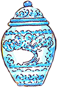
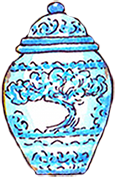

Armario
Biombo
Candil
Cerámica
Yunque
Telas de
importación
importación
Cruz
Guitarra

 cerámicas para embellecer los salones de los grandes palacios en la Nueva España. Sus decorado tan característico también fue influencia para crear nuestra propia identidad, un ejemplo muy conocido es la talavera del estado de Puebla, que destaca por el color azul de sus decorados sobre fondo blanco ¿La has visto?"
data-img="icon4.png" id="Imagen05">
cerámicas para embellecer los salones de los grandes palacios en la Nueva España. Sus decorado tan característico también fue influencia para crear nuestra propia identidad, un ejemplo muy conocido es la talavera del estado de Puebla, que destaca por el color azul de sus decorados sobre fondo blanco ¿La has visto?"
data-img="icon4.png" id="Imagen05">